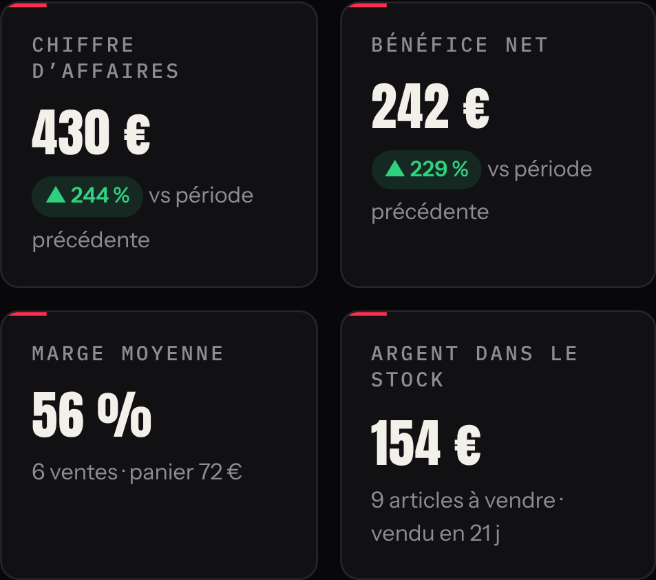
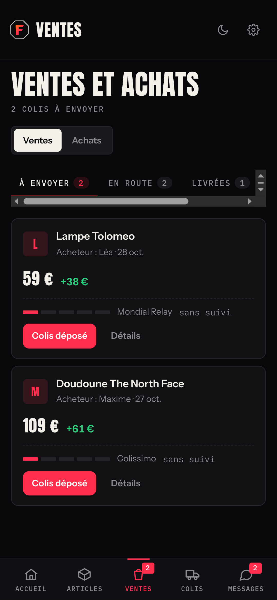
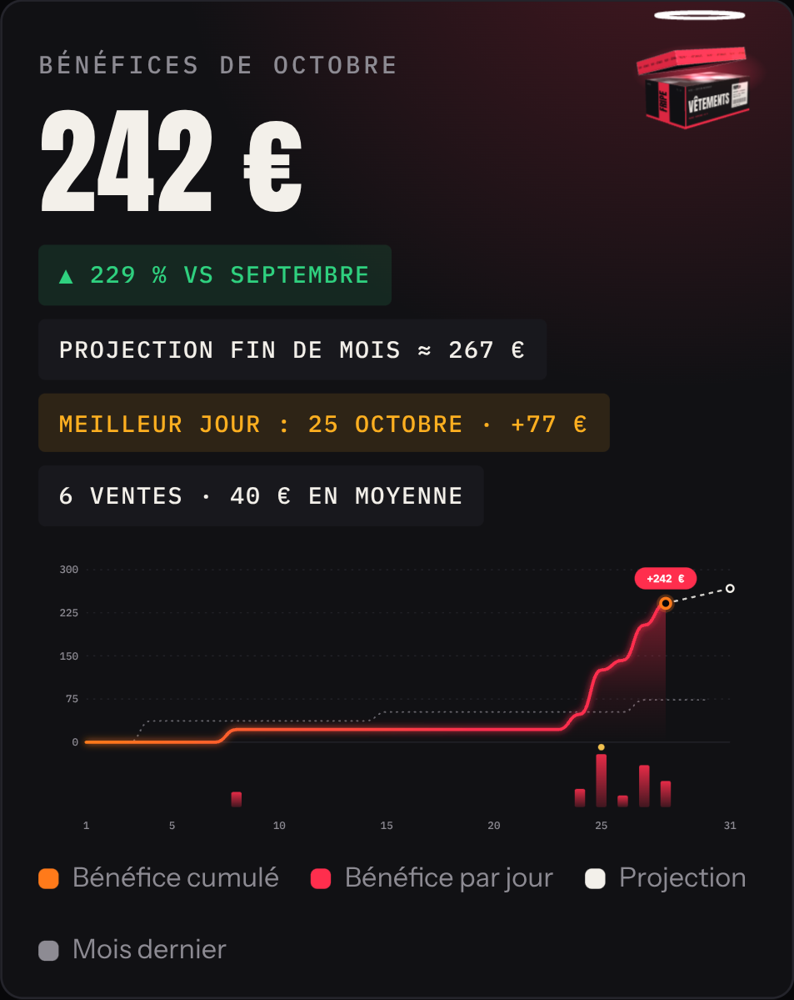

0 €
vendus sur Vinted ce mois-ci
≠ gagné
− prix d’achat ?
− frais ?
− envois ?
− tableur, notes, captures…
= ???
FRIPE
Le poste de pilotage des revendeurs Vinted
Fripe fait le calcul.Bénéfice net = vente − achat − frais
Le bénéfice de chaque article.
Publie sur Vinted en 1 clic.avec l’extension gratuite Fripe Connect
Chaque colis, jusqu’au paiement.





✓
Annonce pré-rempliePhotos, titre, prix : tu vérifies et tu publies.
Données d’exemple
Ventes.
Stock.
Colis.
Bénéfice.
Tout au même endroit.


Fripe
Vendu ≠ gagné.
Fripe fait le calcul.
Essaie gratuitementfripe-iota.vercel.app
Gratuit jusqu’à 20 articles · sans carte bancaire
Outil indépendant, non affilié à Vinted